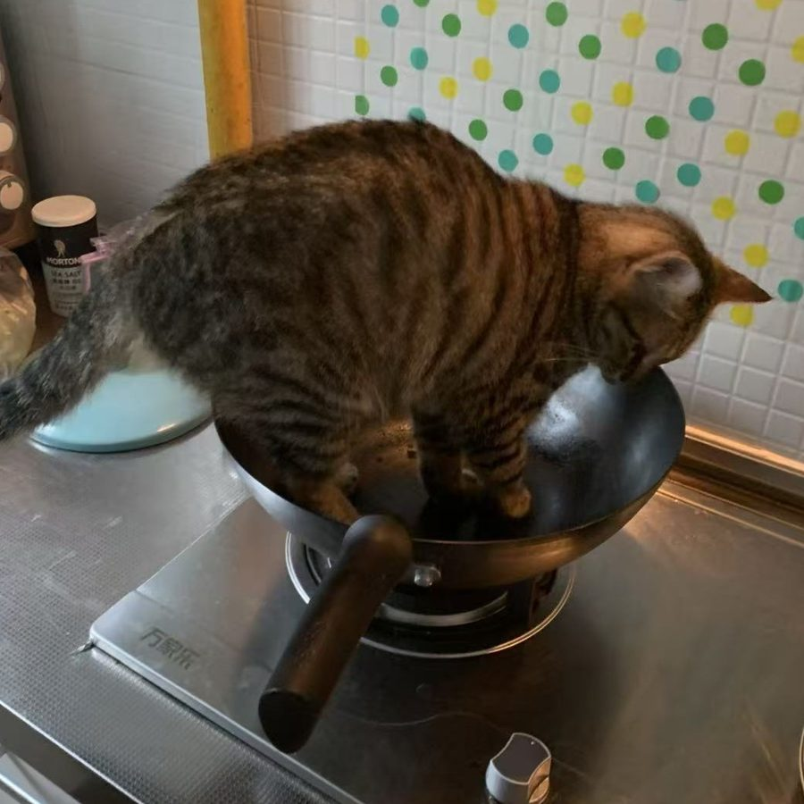

Education
- 輔仁大学（Fu Jen Catholic University）レストラン・ホテル経営学科 学士 ｜ 2012–2016
Language Skill
- 中国語（母語）
- 英語（ビジネスレベル）
- 日本語（ビジネスレベル ｜ JLPT N2 取得、N1 受験予定）
A Few Fun Facts
- 料理：パエリアから台湾の魯肉飯まで作ります。得意料理は麻婆豆腐。辛いものが大好きです
- ゲーム：一番長く遊んでいるのは『真・三國無双』。おかげで三国志の歴史にもハマりました
- 猫：私に似て食いしん坊な猫と暮らしています。料理が終わった中華鍋に飛び込んで、匂いを確かめるのが日課です（証拠写真つき）

Contact
- Email：superpie147@gmail.com
- LinkedIn：プロフィールを見る